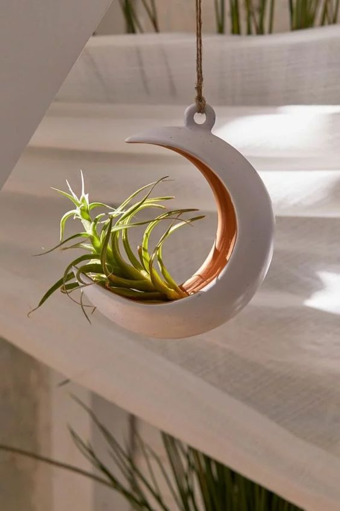

All you need to know About Us
les produits de poterie marocaine proposés par Medin Maroc sont faits main, dans le plus pur respect de la tradition. Les artisans potiers utilisent la technique de la « double cuisson » : l’argile est dans un premier temps modelé puis cuite. Il est ensuite peint et cuit une seconde fois pour donner aux couleurs cet aspect brillant, marque de fabrique de a poterie marocaine. Medin Maroc vous propose bien évidemment des tajines de décoration ainsi que des tajines de cuisson, et aussi une gamme de produits très variée. Vous trouverez des vases, des cendriers marocains, des plats, de la vaisselle…


OUR PRODUCT


OUR ARTISTS

AICHA TABBIZ
Au Maroc, les magnifiques poteries artisanales de Mama Aicha se vendent de plus en plus.

AICHA TABBIZ
Au Maroc, les magnifiques poteries artisanales de Mama Aicha se vendent de plus en plus.

AICHA TABBIZ
Au Maroc, les magnifiques poteries artisanales de Mama Aicha se vendent de plus en plus.
FAQ
Dans la mesure du possible, nous pouvons discuter des options de personnalisation de la poterie en fonction de vos besoins. Contactez notre équipe du service client pour plus d'informations.
Pour entretenir votre poterie marocaine, essuyez-la doucement avec un chiffon humide. Évitez les produits chimiques agressifs, car ils pourraient endommager l'émail. Les poteries marocaines ne sont généralement pas destinées à un usage alimentaire, sauf indication contraire.
Oui, nous offrons une politique de retour. Si vous n'êtes pas satisfait de votre achat, veuillez nous contacter dans les 14 jours suivant la réception de votre commande pour discuter des étapes de retour.